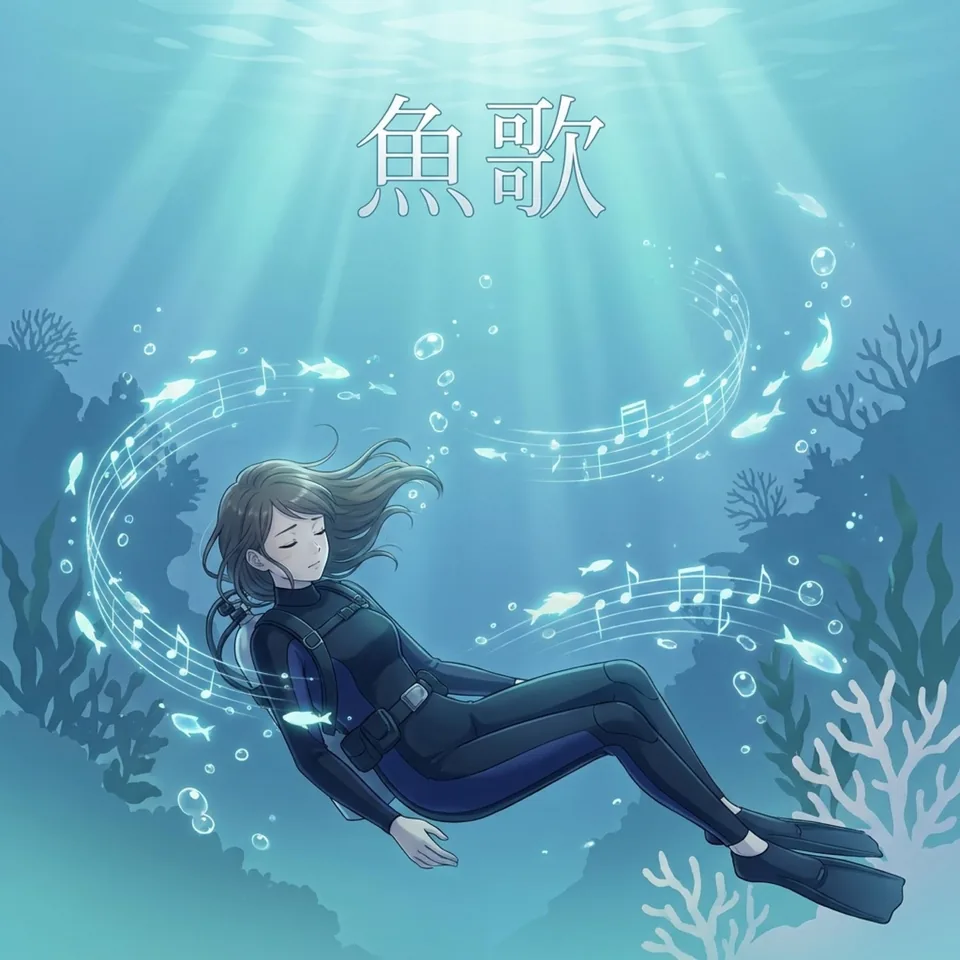
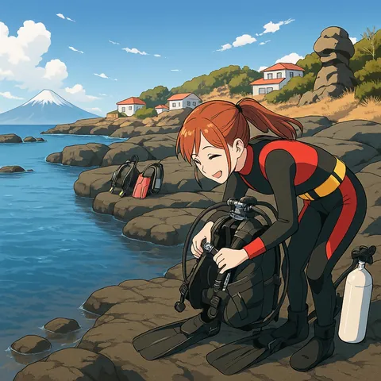

魚歌 - UO-UTA -
海の生き物を一匹ずつ主役にした、全19曲の“海のいきもの図鑑”。
TJ3rd Album
Now Streaming2026.07.30 Release
海の生き物を、一匹ずつ主役に。
ジャンルの境界を泳ぎ渡る、全19曲。

3rd Album2026.07.30
アカテガニのスカ、ネコザメのスウィング、カエルアンコウのファンク──。
海の生き物を一匹ずつ主役にして、その暮らしや生態を歌にした全19曲。満月の夜に命を放つカニも、パイプに住む小さな忍者も、ハーレムを率いる赤い魚も。ジャンルの境界を自由に泳ぎ渡る、TJの3rdアルバムです。
Tracklist19 songs
曲を押すと、サビから30秒試聴できます。
フルで聴くなら、各ストリーミングで。
Meet them in Miura
『魚歌』に登場する生き物の多くは、神奈川・三浦の海でも暮らしています。写真はTJのパートナー「三浦 海の学校」の海の生き物図鑑から。写真の横の ▶ で、その子の歌が流れます。


Works3 albums / 47 songs
海の生き物を一匹ずつ主役にした、全19曲の“海のいきもの図鑑”。

オープンウォーターからインストラクターまで。ダイバーの認定ステップを、一段ずつ歌にしたコンセプトアルバム。
デビューアルバム。海へ向かう高揚から、SUP、ウェットスーツの季節、潮騒の夜まで。
AboutAI Virtual Singer
TJ（ティージェー）は、最新のAIと人間のクリエイティビティが溶け合って生まれたバーチャルシンガー。無重力の海を泳ぐように、ジャンルの境界を越えてOcean Pulseなサウンドを奏でます。
その歌声は泡のように軽やかに心へ触れ、潮流のように深く感情を揺さぶる──。あなたの鼓動とシンクロする瞬間を、一緒に潜って体験してください。
TJ is a virtual vocalist born from the fusion of cutting-edge AI and human imagination. Like diving weightlessly through the sea, she crosses genres to craft an Ocean Pulse soundscape — take the plunge and feel your heartbeat sync with hers.